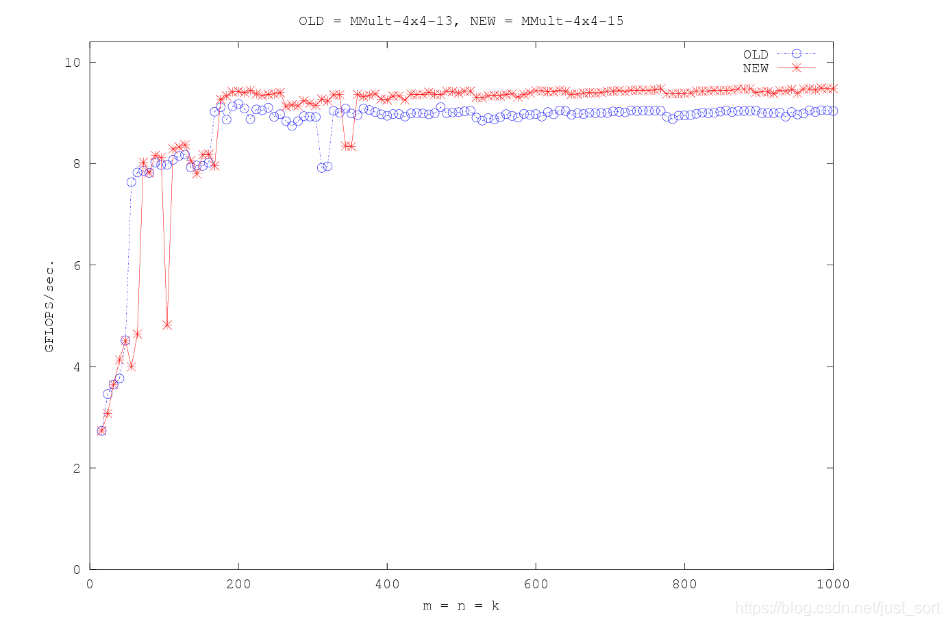
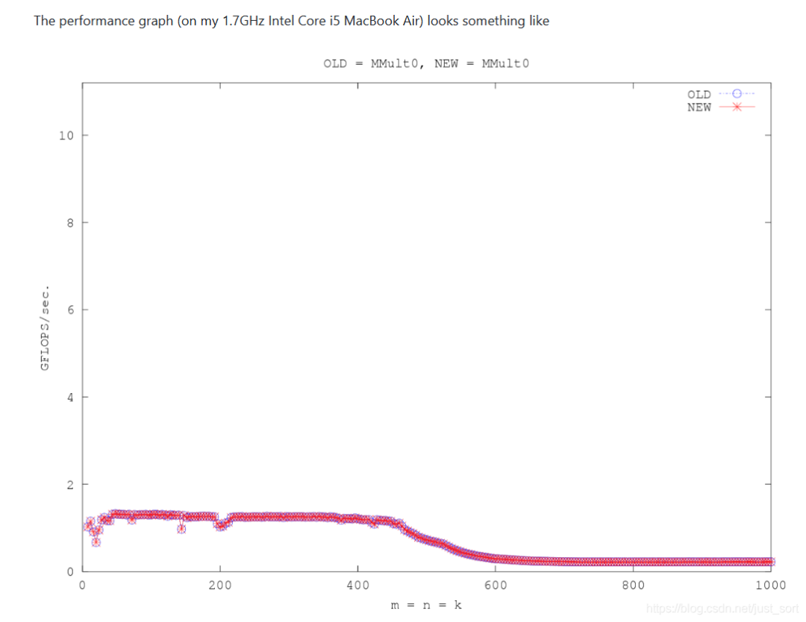
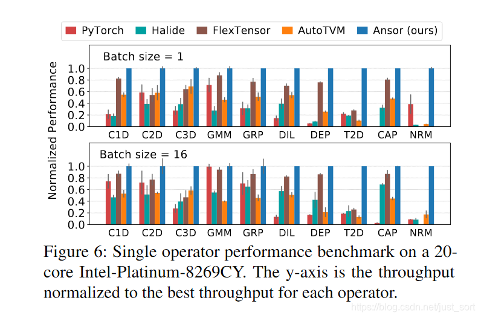
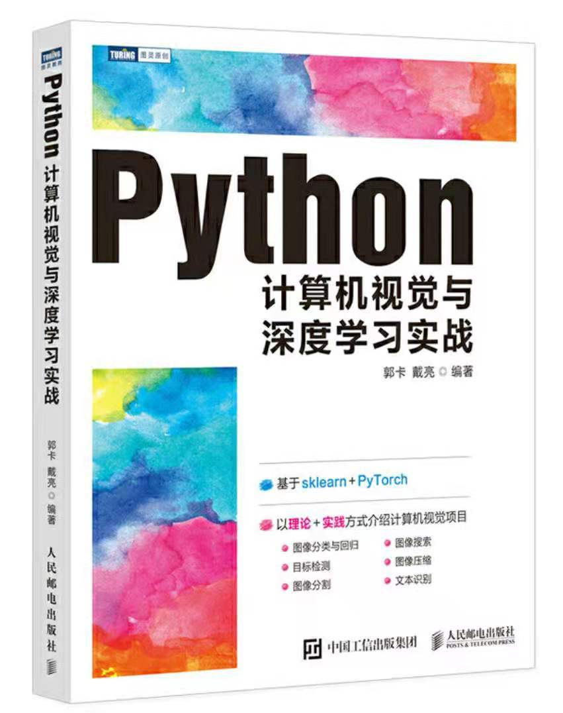

[TVM 3세대 최적화 순례] X86에서 일반 matmul operator를 90배 가속하기¶
최근 기본적인 컴파일러 지식을 번역하고 TVM scheduling을 복습하면서, 1년 전 정리하지 않고 진행했던 GEMM 관련 실험과 탐구들이 떠올랐습니다. 그래서 세 가지 TVM 튜토리얼, 즉 3세대의 TVM 최적화 기법을 바탕으로 제가 이전에 학습했던 내용을 간략하게 정리해 보았습니다. 이 글에서는 각 schedule에 대한 자세한 설명과 TIR을 활용한 의사 코드 설명을 통해 독자들이 TVM scheduling을 더 잘 이해할 수 있도록 했습니다. 또한 blocking 기법과 자동 scheduling으로 발견한 고성능 프로그램에 대해 살펴보고, 마이크로 kernel 어셈블리 코드도 간략하게 분석했습니다. 더불어 scheduling 변수를 제어하여 얻은 GFLOPS 히스토그램을 작성하여 각 최적화 기법의 효과를 쉽게 비교할 수 있도록 했습니다. 현재 많은 사람들이 최적화 기법을 연구하고 있으며, 독창적인 최적화 기술을 보유하고 있다는 점을 고려할 때, 일반적인 자동 codegen이 모든 하드웨어에서 GFLOPS의 80~90%를 달성할 수 있다면 딥러닝 컴파일러는 진정으로 "수렴"했다고 할 수 있을 것입니다. 하지만 제 실험 결과, Ansor를 사용하여 Jetson Nano에서 GEMM 최적화 프로그램을 검색하면 성능이 매우 저조한 것으로 나타났습니다. 컴파일러와 딥러닝 프레임워크가 특정 일반적인 시나리오에서 과적합될 수 있다는 점은 이해할 수 있으며, 이는 Ansor가 훌륭한 도구라는 사실을 부정하는 것은 아닙니다. 개인적으로 딥 컴파일러에 대한 우리의 견해가 너무 급진적일 필요는 없다고 생각합니다. 현재 딥러닝 컴파일러는 codegen 측면에서 여전히 반자동 단계에 있습니다. 어떤 회사도 향후 개발할 모든 비즈니스 애플리케이션의 성능을 컴파일러에 전적으로 맡길 수는 없으므로 속도와 안정성 사이의 균형을 유지하는 것이 바람직합니다. 성능보다 현재 저의 우선순위는 코드의 견고성입니다. 많은 경우, 올바르고 안정적인 코드를 작성하는 것은 최적화 기법을 숙달하는 것만큼이나 어렵습니다. 결론적으로, 이 글에 담긴 개인적인 생각을 비판적으로 검토해 주시고, 비판적인 의견도 제시해 주시면 감사하겠습니다. 이 글이 도움이 되었다면 좋아요를 눌러주세요. 이 글을 작성하는 데 이틀이 걸렸습니다. 관련 코드는 https://github.com/BBuf/tvm_mlir_learn 에서 확인할 수 있습니다 . TVM과 MLIR을 함께 배우고 싶다면 이 저장소에 별표를 눌러주세요. 이미 400개 가까운 별표를 받았습니다. 이 글이 100개 이상의 좋아요를 받으면 TVM CUDA 최적화에 대한 비슷한 글을 써보도록 하겠습니다. 좋아요 많이 눌러주시면 감사하겠습니다!
0x0. 소개¶
이 글은 주로 제가 2021년에 접했던 GEMM 최적화에 대한 학습 경험을 요약한 것입니다. 글의 순서는 대략 다음과 같습니다.
- 본 글의 기반이 되는 하드웨어 환경과 이 환경이 달성하고자 하는 목표를 소개합니다.
- GFLOPS 계산 방법을 검토하고 로컬 머신의 GFLOPS를 계산합니다.
- RoofLine 모델.
- CPU에서 GEMM을 최적화하는 방법(https://github.com/apache/tvm/blob/main/gallery/how_to/optimize_operators/opt_gemm.py) 튜토리얼을 설명하고, 각 최적화 방법의 기능과 IR에서의 표현 방식을 자세히 설명합니다.
- Schedule 템플릿과 AutoTVM을 사용하여 operator를 최적화하는 방법에 대한 튜토리얼입니다. (https://github.com/apache/tvm/blob/main/gallery/tutorial/autotvm_matmul_x86.py)
- AutoScheduler를 이용한 operator 최적화 튜토리얼 (https://github.com/apache/tvm/blob/main/gallery/tutorial/auto_scheduler_matmul_x86.py)
- 정리.
다음은 개요 이미지입니다.

자동 schedule 검색에서 얻은 최적의 결과를 기준으로, 검색에는 20분이 소요되었습니다.0x1. 본 글에 필요한 하드웨어 환경 및 본 글에서 수행해야 할 작업.¶
본 글의 실험 및 테스트 데이터는 동일한 하드웨어 환경과 우분투 운영체제에서 수행되었습니다. 다음 그림은 해당 기기의 하드웨어 구성 정보를 보여줍니다.

기기 구성 정보참고로 이 CPU는 64개의 코어를 가지고 있으며, 최대 및 최소 클럭 속도는 각각 3900MHz와 1000MHz이고, L1d, L2, L3 cache 크기는 각각 32K, 1024K, 22528K입니다.
다음으로, 이 글에서 달성하고자 하는 목표에 대해 논의해 보겠습니다. 목표는 매우 간단합니다. [a]의 차원이 [0] , [b]의 차원이 [0] , [c]의 차원이 [1]인 [함수]를 구현하는 것 입니다. 따라서 원래 matrix multiplication 구현은 다음과 같습니다.
// gemm C = A * B + C
void MatrixMultiply(int m, int n, int k, float *a, float *b, float *c)
{
for(int i = 0; i < m; i++){
for (int j=0; j<n; j++ ){
for (int p=0; p<k; p++ ){
C(i, j) = C(i, j) + A(i, p) * B(p, j);
}
}
}
}
이 문제를 단순화하기 위해 본 글에서는 m, n, k의 값을 모두 1024로 가정하겠습니다.
0x2. GFLOPS 계산 방법을 복습하고 로컬 머신의 GFLOPS를 계산합니다.¶
FLOPs: 소문자 's'에 유의하세요. FLOPs는 Floating-point Operations(부동 소수점 연산)의 약자로, 부동 소수점 연산 횟수 또는 계산 복잡도를 나타냅니다. 모델의 복잡도를 측정하는 데 사용될 수 있습니다. 신경망 모델의 복잡도를 평가할 때는 FLOPS가 아닌 FLOPs를 사용해야 합니다. FLOPS: 대문자에 유의하세요. FLOPS는 Floating-point Operations per Second(초당 부동 소수점 연산)의 약자로, 초당 부동 소수점 연산 횟수 또는 계산 속도를 나타냅니다. 하드웨어 성능을 측정하는 데 사용되는 지표입니다. 예를 들어, NVIDIA는 자사 웹사이트에서 다양한 그래픽 카드의 연산 능력을 표시할 때 이 지표를 사용합니다.
TVM 튜토리얼을 설명하기 전에, 먼저 해당 머신의 GFLOPS를 계산하여 이후 TVM 튜토리얼에서 생성되는 GEMM 코드의 성능 수준을 하드웨어의 최대 부동 소수점 성능과 비교해야 합니다.
부동소수점 최대 성능(FPS)은 일반적으로 단위 시간당 곱셈 및 덧셈 연산의 최대 처리량을 계산하는 데 사용되며, GFLOPS 또는 TFLOPS 단위로 측정됩니다. 이는 초당 수행할 수 있는 곱셈 및 덧셈 연산의 총 횟수를 나타냅니다. 하드웨어 아키텍처를 기반으로 이론적인 FPS를 계산할 수도 있고, 어셈블리 명령어를 사용하여 하드웨어의 FPS를 측정할 수도 있습니다. 이 CPU의 아키텍처에 대한 이해가 부족하기 때문에 여기서는 FPS를 직접 측정하고, 이후 설명은 주로 측정된 FPS에 초점을 맞출 것입니다.
가오 아저씨의 방법 https://github.com/pigirons/cpufp 을 기반으로 하며, 여기서의 기본 원리는 register 의존성으로 인해 낭비되는 시간을 감추기 위해 루프 내에 가능한 한 많은 데이터 독립적인 곱셈-누적 어셈블리 명령어를 배치하는 것입니다. 자세한 내용은 https://zhuanlan.zhihu.com/p/28226956을 참조하십시오. 테스트를 위해 다음 명령어를 실행합니다.
git clone git@github.com:pigirons/cpufp.git
sh build.sh
./cpufp num_threads
GFLOPS는 num_threads=1, 2, 4로 각각 테스트되었으며, 이는 단일 코어, 듀얼 코어 및 쿼드 코어 시스템에 대한 GFLOPS를 의미합니다. 결과는 다음과 같습니다.
Thread(s): 1
avx512_vnni int8 perf: 267.7062 GFLOPS.
avx512f fp32 perf: 66.9300 GFLOPS.
avx512f fp64 perf: 33.4678 GFLOPS.
fma fp32 perf: 73.3017 GFLOPS.
fma fp64 perf: 36.6564 GFLOPS.
avx fp32 perf: 36.6528 GFLOPS.
avx fp64 perf: 18.3270 GFLOPS.
sse fp32 perf: 22.3124 GFLOPS.
sse fp64 perf: 11.1580 GFLOPS.
Thread(s): 2
avx512_vnni int8 perf: 535.5030 GFLOPS.
avx512f fp32 perf: 133.8812 GFLOPS.
avx512f fp64 perf: 66.9439 GFLOPS.
fma fp32 perf: 146.6221 GFLOPS.
fma fp64 perf: 73.3141 GFLOPS.
avx fp32 perf: 73.3229 GFLOPS.
avx fp64 perf: 36.6583 GFLOPS.
sse fp32 perf: 44.6286 GFLOPS.
sse fp64 perf: 22.3151 GFLOPS.
Thread(s): 4
avx512_vnni int8 perf: 1070.9130 GFLOPS.
avx512f fp32 perf: 267.7571 GFLOPS.
avx512f fp64 perf: 133.8734 GFLOPS.
fma fp32 perf: 293.1998 GFLOPS.
fma fp64 perf: 146.6209 GFLOPS.
avx fp32 perf: 146.6289 GFLOPS.
avx fp64 perf: 73.3129 GFLOPS.
sse fp32 perf: 89.2652 GFLOPS.
sse fp64 perf: 44.6303 GFLOPS.
GFLOPs와 CPU 코어 수 사이에는 정비례 관계가 있음을 쉽게 알 수 있습니다. 이 글에서는 단일 코어에서의 최적화에 초점을 맞추지만, 이후 프로그램에서는 os.environ['TVM_NUM_THREADS']=str(1) 으로 프로그램을 단일 CPU 코어에 종속시킬 것입니다.
0x3. RoofLine 모델¶
GFLOPs(1 GFLOPs = 10^9 FLOPs)와 GFLOPS 개념은 이미 소개되었습니다. 여기서는 연산 밀도와 RoofLine 모델을 간략하게 소개하겠습니다. 연산 밀도는 단위 메모리 접근당 필요한 연산량을 나타내며, 단위는 FLOPs/Byte입니다. 본 글의 과제에서 FLOPs, 즉 부동 소수점 연산 횟수는 다음과 같습니다... 여기서 바이트는 메모리 접근 횟수를 나타냅니다. 이 예시에서 메모리 접근 횟수는 다음과 같습니다... 따라서 여기서 계산된 밀도는 다음과 같습니다. RoofLine 모델은 하드웨어에서 프로그램 성능의 상한을 평가하는 데 사용되는 모델이며, 다음 다이어그램으로 나타낼 수 있습니다.
RoofLine 모델에서 파생된 RoofLine 모델.
여기서 우리가 계산한 연산 밀도 183.5 FLOPs/Bytes가 단일 코어의 fma fp32 perf: 73.3017 GFLOPS 보다 훨씬 크다는 점에 주목하세요. 따라서 분명히 우리의 operator는 연산 집약형 operator이며, 그렇다면 연산 속도의 상한은 피크 연산 속도이며 대역폭에 의해 제약을 받지 않습니다. 그러므로 우리는 안심하고 다음 설명으로 넘어갈 수 있습니다.
언급할 만한 점은 이론적인 RoofLine 모델과 하드웨어 실제의 RoofLine 모델 사이에는 여전히 일정한 Gap이 있으며, matrix multiplication의 경우 일부 파라미터의 변화가 이 operator를 연산 집약형에서 메모리 접근 집약형으로 바뀌게 할 수 있다는 점입니다. SenseTime의 톈쯔천 형님의 글 《딥러닝 모델 크기와 모델 추론 속도에 대한 논의》를 추천합니다. 그 안에서 RoofLine 모델에 대해 더 자세한 설명과 사고를 다루고 있습니다. https://zhuanlan.zhihu.com/p/411522457
어쨌든, 이제 우리는 본 글에서 다루는 규모의 matrix multiplication이 연산 집약형 operator라는 것을 알았으니, TVM이 이런 메모리 접근 집약형 operator에 대해 부동 소수점 피크 대비 어느 수준까지 최적화할 수 있는지 살펴보겠습니다.
0x4. How to optimize GEMM on CPU 튜토리얼 설명.¶
이 튜토리얼은 TVM에서 schedule에 대한 최적화 방법을 전반적으로 설명하며, 이러한 최적화는 기본적으로 제가 이전에 소개한 https://github.com/flame/how-to-optimize-gemm 저장소에서 가져온 것입니다. 예를 들면 blocking, vectorize, 루프 reorder, Array Packing 등의 기법입니다. TVM의 이 튜토리얼은 거의 모든 최적화 기법을 사용하고, 곧바로 최종 결과를 제공합니다. 저는 이것이 TVM에 익숙하지 않은 사람에게는 다소 폭이 크다고 생각합니다. 따라서 다음으로 저는 이러한 기법들을 하나씩 소개하고 점진적으로 Naive한 TVM tensor expression에 적용하면서 각 최적화 기법에 대응하는 TIR의 변화를 보여드리겠습니다.
이 절의 튜토리얼에서 다루는 최적화 기법은 다음과 같습니다.
- Blocking (블로킹)
- Vectorization (벡터화)
- Loop Permutation (블록의 계산 순서 조정)
- Array Packing (데이터 재배치)
- Write cache for blocks (쓰기 연산 데이터 블록을 위한 연속 메모리 cache 생성)
- Parallel (병렬 연산)
자세히 설명하겠습니다.
0x4.1 Blocking (블로킹)¶
Blocking은 보통 Tiling이라고도 불리며, 루프를 최적화하는 데 흔히 사용되는 매우 효과적인 전략입니다. 먼저 Blocking이 어떤 문제를 해결하려는지 설명한 다음 어떻게 해결하는지 살펴보겠습니다. 다음 예시를 보세요.
int *A = new float [N];
int *B = new float[M];
for(int i = 0; i < N; i++){
for(int j = 0; j < M; j++) {
A[i] += B[j];
}
}
이 예시에서 M이 비교적 크다면, 전체 알고리즘은 분명 비효율적일 것입니다. 그 이유는 컴퓨터가 배열에 접근할 때 메모리에서 하나씩 접근하는 것이 아니라 CacheLine 단위로 접근하기 때문이며, CacheLine의 크기는 일반적으로 64K입니다. 즉, 우리가 B[0]에 접근할 때, 실제로는 B[0]-B[15]가 동일한 CacheLine에 있어 함께 Cache로 들어가게 되고, 이렇게 하면 접근 속도가 더 빨라집니다. 하지만 CPU의 Cache는 제한적이기 때문에, Cache가 가득 찬 후에 새로운 CacheLine이 들어오려면 Cache는 오래된 CacheLine을 축출해야 합니다.
예를 들어 여기서 M이 비교적 크다면, 우리가 B[200]에 접근할 때 B[0]에 해당하는 CacheLine은 이미 cache에서 축출되어 있고, 이렇게 i가 증가함에 따라 다음에 다시 B[0]에 접근하려면 메모리에서 다시 로드해야 합니다. 따라서 전체 알고리즘은 반복적으로 접근해야 할 데이터가 cache에서 빈번하게 들고 나기 때문에 성능이 비교적 나쁩니다.
이 문제를 해결하기 위해 Blocking 또는 Tiling이 도입되었습니다. Blocking은 전체 데이터양이 Cache에 들어갈 수 없는 상황에서, 전체 데이터를 작은 블록으로 나누어 접근하여 각 Tile이 Cache에 들어갈 수 있게 하는 것입니다. 구체적인 방법은 내부 루프를 outer loop * inner loop로 분해하는 것입니다. 그런 다음 outer loop를 더 바깥쪽으로 이동시켜 inner loop의 데이터 접근이 반드시 Cache에서 이루어질 수 있도록 보장하는 것입니다.
다음 코드의 경우:
for(int i = 0; i < N; i++){
for(int j = 0; j < M; j++) {
A[i] += B[j];
}
}
M이 비교적 클 때, Cache Miss 횟수를 간단히 계산해 볼 수 있습니다. A의 경우 Cache Miss 횟수는, 그 중 B의 Cache Miss 횟수는, N을 곱하는 이유는 i가 매번 증가할 때 M이 매우 크므로 B의 시작 부분 데이터가 이미 cache에서 축출되었기 때문입니다. 이렇게 하면 총 Cache Miss 횟수가 됩니다.
Blocking 솔루션에 따라, 내부 루프 for(int j = 0; j < M; j++) 을 T 크기로 분해합니다. 그러면 위의 코드는 다음과 같이 변합니다.
for (int j_o = 0; j_o < M; j_o += T){
for (int i = 0; i < N; i++) {
for (int j_i = j_o; j_i < j_o + T; j_i++){
A[i] += B[j_i];
}
}
}
여기서 가장 안쪽의 j_i 루프는 항상 cache에 있을 수 있고, 총 Cache Miss는 + * = 가 됨을 발견할 수 있습니다. 자릿수로 보면 한 번의 Block 최적화를 거친 후, Cache Miss 횟수가 T배 줄어들었습니다.
명백히 우리는 루프가 이제 inner loop가 되었음을 발견했고, 마찬가지로 그것을 분해합니다. 그러면 의사 코드는 다음과 같이 변합니다.
for (int i_o = 0; i_o < N; i_o += T){
for (int j_o = 0; j_o < M; j_o += T) {
for (int i_i = i_o; i_i < i_o + T; i_i++){
for (int j_i = j_o; j_i < j_o + T; j_i++){
A[i_i] += B[j][i];
}
}
}
}
최종적으로 얻은 Cache Miss 자릿수는 원래 루프 대비 배 감소합니다. 이것이 Blocking 또는 Tiling의 기본 원리이며, 블록 분할을 통해 데이터 접근의 Cache Miss를 줄여 성능을 향상시키는 것입니다. 다음으로 TVM 튜토리얼을 기반으로 matrix multiplication operator에 Tiling을 적용한 결과를 살펴보겠습니다.
먼저 TVM이 기본 Schedule로 matrix multiplication을 실행하는 TIR을 보충하겠습니다. 해당 실험 코드는 https://github.com/BBuf/tvm_mlir_learn/blob/main/optimize_gemm/optimize_matmul_in_gemm/tvm_without_tune_default_schedule.py 에 있습니다.
@main = primfn(A_1: handle, B_1: handle, C_1: handle) -> ()
attr = {"from_legacy_te_schedule": True, "global_symbol": "main", "tir.noalias": True}
buffers = {A: Buffer(A_2: Pointer(float32), float32, [1048576], []),
B: Buffer(B_2: Pointer(float32), float32, [1048576], []),
C: Buffer(C_2: Pointer(float32), float32, [1048576], [])}
buffer_map = {A_1: A, B_1: B, C_1: C} {
for (m: int32, 0, 1024) {
for (n: int32, 0, 1024) {
C[((m*1024) + n)] = 0f32
for (k: int32, 0, 1024) {
let cse_var_2 = (m*1024)
let cse_var_1 = (cse_var_2 + n)
C[cse_var_1] = (C[cse_var_1: int32] + (A[(cse_var_2: int32 + k)]*B[((k*1024) + n)]))
}
}
}
}
보시다시피 이는 단순한 3중 for 루프 중첩이며, 어떤 최적화 기법도 사용되지 않았으므로, 자연히 이 코드의 효율은 비교적 낮습니다. 본 글의 BaseLine으로 사용할 수 있습니다. 저는 그 실행 시간에 따라 GFLOPS를 계산했고, 결과는 다음과 같습니다.
0.687 GFLOPS
그럼 Blocking 최적화를 추가한 TIR을 살펴보겠습니다. 코드는 https://github.com/BBuf/tvm_mlir_learn/blob/main/optimize_gemm/optimize_matmul_in_gemm/tvm_without_tune_only_blocking.py 에 있습니다.
@main = primfn(A_1: handle, B_1: handle, C_1: handle) -> ()
attr = {"from_legacy_te_schedule": True, "global_symbol": "main", "tir.noalias": True}
buffers = {A: Buffer(A_2: Pointer(float32), float32, [1048576], []),
B: Buffer(B_2: Pointer(float32), float32, [1048576], []),
C: Buffer(C_2: Pointer(float32), float32, [1048576], [])}
buffer_map = {A_1: A, B_1: B, C_1: C} {
for (m.outer: int32, 0, 32) {
for (n.outer: int32, 0, 32) {
for (m.inner.init: int32, 0, 32) {
for (n.inner.init: int32, 0, 32) {
C[((((m.outer*32768) + (m.inner.init*1024)) + (n.outer*32)) + n.inner.init)] = 0f32
}
}
for (k.outer: int32, 0, 256) {
for (k.inner: int32, 0, 4) {
for (m.inner: int32, 0, 32) {
for (n.inner: int32, 0, 32) {
let cse_var_3 = (n.outer*32)
let cse_var_2 = ((m.outer*32768) + (m.inner*1024))
let cse_var_1 = ((cse_var_2 + cse_var_3) + n.inner)
C[cse_var_1] = (C[cse_var_1: int32] + (A[((cse_var_2: int32 + (k.outer*4)) + k.inner)]*B[((((k.outer*4096) + (k.inner*1024)) + cse_var_3: int32) + n.inner)]))
}
}
}
}
}
}
}
우리가 소개한 Blocking 원리와 거의 동일하게, i, j, k 3중 루프를 각각 outer와 inner의 두 새로운 루프로 분해하여 원래 계산을 분할함으로써 Cache Miss를 줄이는 것을 볼 수 있습니다. TIR에서 행렬 A는 작은 블록으로 분할되고, 행렬 B도 작은 블록으로 분할되며, 행렬 C도 작은 블록으로 분할되고, 그 후 C의 각 작은 블록에 대해 Naive한 matrix multiplication을 적용합니다. 다음 코드는 스크립트에서 이 Schedule을 어떻게 설정하는지 보여줍니다.
# C(M, N) = A(M, K) x B(K, N) 계산
def matmul(M, N, K, dtype):
# Algorithm
k = te.reduce_axis((0, K), "k")
A = te.placeholder((M, K), name="A", dtype=dtype)
B = te.placeholder((K, N), name="B", dtype=dtype)
C = te.compute((M, N), lambda m, n: te.sum(A[m, k] * B[k, n], axis=k), name="C")
bn = 32
kfactor = 4
s = te.create_schedule(C.op)
# Blocking by loop tiling
mo, no, mi, ni = s[C].tile(C.op.axis[0], C.op.axis[1], bn, bn)
(kaxis,) = s[C].op.reduce_axis
ko, ki = s[C].split(kaxis, factor=kfactor)
# Hoist reduction domain outside the blocking loop
s[C].reorder(mo, no, ko, ki, mi, ni)
return s, [A, B, C]
Blocking 최적화 기반의 GFLOPS는 5.929 GFLOPS 입니다.
종합하면, Blocking은 주로 행렬을 블록 단위로 분할하여 Cache 용량이 작아 발생하는 Cache Miss를 완화하고, matrix multiplication의 실행 효율을 효과적으로 높입니다.
0x4.2 Vectorize (벡터화)¶
다음으로 본 튜토리얼의 두 번째 최적화 기법인 vectorize(벡터화)를 소개합니다. 현대 CPU는 부동 소수점 연산에 대해 기본적으로 SIMD 연산을 지원하므로, 이 특성을 기반으로 matrix multiplication을 최적화할 수 있습니다. vectorize는 iter 방향의 루프 반복을 ramp로 대체하여 SIMD 명령어를 통해 데이터의 일괄 계산을 구현하며, 데이터 size가 상수이고 분할된 iter가 2의 거듭제곱(즉, SIMD의 계산 수량을 만족)일 때만 대체가 발생합니다. 이는 SIMD 계산 장비의 일반적인 Schedule입니다. Blocking 최적화에 비해, TVM tensor expression에서 우리는 단 한 줄의 코드만 추가하면 구현할 수 있습니다.
# Vectorization
s[C].vectorize(ni)
그러면 생성된 TIR은 다음과 같습니다.
@main = primfn(A_1: handle, B_1: handle, C_1: handle) -> ()
attr = {"from_legacy_te_schedule": True, "global_symbol": "main", "tir.noalias": True}
buffers = {A: Buffer(A_2: Pointer(float32), float32, [1048576], []),
B: Buffer(B_2: Pointer(float32), float32, [1048576], []),
C: Buffer(C_2: Pointer(float32), float32, [1048576], [])}
buffer_map = {A_1: A, B_1: B, C_1: C} {
for (m.outer: int32, 0, 32) {
for (n.outer: int32, 0, 32) {
for (m.inner.init: int32, 0, 32) {
C[ramp((((m.outer*32768) + (m.inner.init*1024)) + (n.outer*32)), 1, 32)] = broadcast(0f32, 32)
}
for (k.outer: int32, 0, 256) {
for (k.inner: int32, 0, 4) {
for (m.inner: int32, 0, 32) {
let cse_var_3 = (n.outer*32)
let cse_var_2 = ((m.outer*32768) + (m.inner*1024))
let cse_var_1 = (cse_var_2 + cse_var_3)
C[ramp(cse_var_1, 1, 32)] = (C[ramp(cse_var_1: int32, 1, 32)] + (broadcast(A[((cse_var_2: int32 + (k.outer*4)) + k.inner)], 32)*B[ramp((((k.outer*4096) + (k.inner*1024)) + cse_var_3: int32), 1, 32)]))
}
}
}
}
}
}
가장 안쪽 루프에서 vectorize가 이루어졌기 때문에, 이전 절의 TIR에 비해 여기서 가장 안쪽 루프가 제거되고 직접 ramp로 대체되었습니다. 또한 주목할 만한 점은 여기에 broadcast 연산이 있다는 것인데, 이는 n.inner 이 루프에서 A의 첨자가 이 루프 자체와 관계가 없기 때문에, 스칼라와 vector를 곱하는 것과 동등합니다. 그래서 여기서 그것을 broadcast하여 vector로 만들면, 직접 SIMD 명령어를 사용하여 vector의 곱셈을 수행할 수 있습니다.
GFLOPS를 테스트해 봅니다(https://github.com/BBuf/tvm_mlir_learn/blob/main/optimize_gemm/optimize_matmul_in_gemm/tvm_without_tune_blocking_vectorize.py 실행).
TVM Without Tune GFLOPS: 5.951689373974107
Blocking만 사용한 최적화의 GFLOPS와 비교하면 약간의 향상이 있지만, 여기서는 폭이 크지 않습니다.
0x4.3 Loop Permutation (블록의 계산 순서 조정)¶
먼저 이 최적화에 해당하는 Schedule상의 변화를 살펴보겠습니다. 코드는 다음과 같습니다.
# re-ordering
s[C].reorder(mo, no, ko, mi, ki, ni)
이전 2개 최적화의 schedule(s[C].reorder(mo, no, ko, ki, mi, ni))과 비교해, 유일한 변화는 와의 위치가 바뀐 것뿐인데, 이게 효과가 있을까요? 테스트해 봅니다.
TVM Without Tune GFLOPS: 21.480747047174887
GFLOPS가 3-4배 향상된 것을 볼 수 있는데, 그렇다면 여기서 핵심은 무엇일까요? Blocking Schedule의 TIR에 해당하는 의사 코드를 다시 작성해 보면 비교적 관찰하기 좋습니다.
for m_o in range(0, M, T_m):
for n_o in range(0, N, T_n):
for k_o in range(0, K, T_k):
for k_i in range(k_o, k_o + T_k):
for m_i in range(m_o, m_o + T_m):
for n_i in range(n_o, n_o + T_n):
C[m_i][n_i] += A[m_i][k_i] * B[k_i][n_i]
현재 schedule에서 A는 열 단위로 접근되고 있음을 알 수 있는데, 이는 Cache에 비친화적입니다. 만약 우리가 와 내부 axis 의 중첩 루프 순서를 바꾸면, A 행렬의 접근 패턴은 cache에 더 친화적이 됩니다. 이것이 우리가 큰 성능 향상을 볼 수 있는 이유이기도 합니다.
이제 새로운 TIR 표현은 다음과 같습니다.
@main = primfn(A_1: handle, B_1: handle, C_1: handle) -> ()
attr = {"from_legacy_te_schedule": True, "global_symbol": "main", "tir.noalias": True}
buffers = {A: Buffer(A_2: Pointer(float32), float32, [1048576], []),
B: Buffer(B_2: Pointer(float32), float32, [1048576], []),
C: Buffer(C_2: Pointer(float32), float32, [1048576], [])}
buffer_map = {A_1: A, B_1: B, C_1: C} {
for (m.outer: int32, 0, 32) {
for (n.outer: int32, 0, 32) {
for (m.inner.init: int32, 0, 32) {
C[ramp((((m.outer*32768) + (m.inner.init*1024)) + (n.outer*32)), 1, 32)] = broadcast(0f32, 32)
}
for (k.outer: int32, 0, 256) {
for (m.inner: int32, 0, 32) {
for (k.inner: int32, 0, 4) {
let cse_var_3 = (n.outer*32)
let cse_var_2 = ((m.outer*32768) + (m.inner*1024))
let cse_var_1 = (cse_var_2 + cse_var_3)
C[ramp(cse_var_1, 1, 32)] = (C[ramp(cse_var_1: int32, 1, 32)] + (broadcast(A[((cse_var_2: int32 + (k.outer*4)) + k.inner)], 32)*B[ramp((((k.outer*4096) + (k.inner*1024)) + cse_var_3: int32), 1, 32)]))
}
}
}
}
}
}
이에 해당하는 의사 코드는 다음과 같이 작성할 수 있습니다.
for m_o in range(0, M, T_m):
for n_o in range(0, N, T_n):
for k_o in range(0, K, T_k):
for m_i in range(m_o, m_o + T_m):
for k_i in range(k_o, k_o + T_k):
for n_i in range(n_o, n_o + T_n):
C[m_i][n_i] += A[m_i][k_i] * B[k_i][n_i]
0x4.4 Array Packing (데이터 재배치)¶
먼저 matrix multiplication의 tensor expression에 Array Packing의 Schedule을 추가하는 방법을 살펴보겠습니다.
# C(M, N) = A(M, K) x B(K, N) 계산
def matmul(M, N, K, dtype):
# Algorithm
k = te.reduce_axis((0, K), "k")
A = te.placeholder((M, K), name="A", dtype=dtype)
B = te.placeholder((K, N), name="B", dtype=dtype)
bn = 32
kfactor = 4
packedB = te.compute(
(N / bn, K, bn), lambda bigN, k, littleN: B[k, bigN * bn + littleN], name="packedB"
)
C = te.compute(
(M, N),
lambda m, n: te.sum(A[m, k] * packedB[n // bn, k, tvm.tir.indexmod(n, bn)], axis=k),
name="C",
)
s = te.create_schedule(C.op)
mo, no, mi, ni = s[C].tile(C.op.axis[0], C.op.axis[1], bn, bn)
(kaxis,) = s[C].op.reduce_axis
ko, ki = s[C].split(kaxis, factor=kfactor)
s[C].reorder(mo, no, ko, mi, ki, ni)
s[C].vectorize(ni)
bigN, _, littleN = s[packedB].op.axis
s[packedB].vectorize(littleN)
s[packedB].parallel(bigN)
return s, [A, B, C]
다음 그림은 Array Packing의 일반적인 원리에 대한 설명입니다.

Array Packing의 일반적인 원리 설명B가 평탄화된 후, 우리가 k 차원에서 반복할 때 B 배열의 접근이 연속적이지 않다는 것을 관찰할 수 있습니다. 우리는 B(차원이 )에 대해 재배치를 적용해서 차원을 갖도록 할 수 있는데, 여기서 bn은 분할 인자이며 inner 루프에서 B의 vector 크기이기도 합니다. 이 재배치는 N을 두 차원 — 과 — 으로 나누고, 새로운 차원 은 B가 outer 루프에서 inner 루프로 가는 인덱스 (no, ko, ki, ni)와 일치합니다. 그래서 B가 평탄화 재배치된 후 메모리 접근은 연속적입니다.
Array Packing Schedule을 추가한 새로운 TIR은 다음과 같습니다.
@main = primfn(A_1: handle, B_1: handle, C_1: handle) -> ()
attr = {"from_legacy_te_schedule": True, "global_symbol": "main", "tir.noalias": True}
buffers = {A: Buffer(A_2: Pointer(float32), float32, [1048576], []),
B: Buffer(B_2: Pointer(float32), float32, [1048576], []),
C: Buffer(C_2: Pointer(float32), float32, [1048576], [])}
buffer_map = {A_1: A, B_1: B, C_1: C} {
allocate(packedB: Pointer(global float32x32), float32x32, [32768]), storage_scope = global {
for (bigN: int32, 0, 32) "parallel" {
for (k: int32, 0, 1024) {
packedB_1: Buffer(packedB, float32x32, [32768], [])[((bigN*1024) + k)] = B[ramp(((k*1024) + (bigN*32)), 1, 32)]
}
}
for (m.outer: int32, 0, 32) {
for (n.outer: int32, 0, 32) {
for (m.inner.init: int32, 0, 32) {
C[ramp((((m.outer*32768) + (m.inner.init*1024)) + (n.outer*32)), 1, 32)] = broadcast(0f32, 32)
}
for (k.outer: int32, 0, 256) {
for (m.inner: int32, 0, 32) {
for (k.inner: int32, 0, 4) {
let cse_var_3 = ((m.outer*32768) + (m.inner*1024))
let cse_var_2 = (k.outer*4)
let cse_var_1 = (cse_var_3 + (n.outer*32))
C[ramp(cse_var_1, 1, 32)] = (C[ramp(cse_var_1: int32, 1, 32)] + (broadcast(A[((cse_var_3: int32 + cse_var_2: int32) + k.inner)], 32)*packedB_1[(((n.outer*1024) + cse_var_2) + k.inner)]))
}
}
}
}
}
}
}
우리는 주로 Array Packing을 적용하기 전 B에 대한 접근 방식과, Array Packing을 사용한 후 B에 대한 접근 방식을 살펴봅니다. 이전에 얻은 TIR의 의사 코드 표현은 다음과 같습니다.
for m_o in range(0, M, T_m):
for n_o in range(0, N, T_n):
for k_o in range(0, K, T_k):
for m_i in range(m_o, m_o + T_m):
for k_i in range(k_o, k_o + T_k):
for n_i in range(n_o, n_o + T_n):
C[m_i][n_i] += A[m_i][k_i] * B[k_i][n_i]
이 부분에서 B의 데이터 배치 방식은 이며, 우리가 B[k_i][n_i]에 접근할 때 차원 N을 가로질러 접근해야 하고, 그 stride는 N의 크기 즉 1024와 관련이 있습니다. Array Packing이 B의 데이터 배치를 에서 으로 바꾸므로, TIR에서는 (no, ko, ki, ni) 순서에 해당하며, 이제 각 작은 블록 계산 시 B에 대한 데이터 접근은 반드시 연속적으로 행 단위로 접근하게 되며, 이로써 우리가 원하는 효과가 구현됩니다.
사실 세심한 분이라면 블록 분할 후 A는 비록 행 단위로 접근되지만, 실제로는 K 차원도 가로지르며 그 stride가 K의 크기 즉 1024와 관련이 있다는 것을 발견할 수 있습니다. 우리는 왜 A에 대해 Pack을 하지 않았을까요? 여러분이 한번 생각해 보실 수 있고, 다음의 Auto Schedule의 Micro Kernel 어셈블리 코드에 대한 간단한 분석에서 답을 제공합니다.
0x4.5 Write cache for blocks (쓰기 연산 데이터 블록을 위한 연속 메모리 cache 생성)¶
블록 분할 후, 프로그램은 결과를 블록 단위로 C에 쓰는데, 접근 패턴이 순차적이지 않습니다. 그래서 우리는 순차적인 cache 배열을 사용하여 블록 결과를 보관하고, 모든 블록의 결과가 준비되었을 때 C에 쓸 수 있습니다. 작업도 비교적 간단합니다. 이전 절의 코드를 기반으로 한 줄을 추가합니다.
# Allocate write cache
CC = s.cache_write(C, "global")
결과를 테스트해 봅니다.
TVM Without Tune GFLOPS: 42.88957971622241
성능이 더욱 향상된 것을 볼 수 있습니다. TIR의 변화를 살펴보겠습니다.
@main = primfn(A_1: handle, B_1: handle, C_1: handle) -> ()
attr = {"from_legacy_te_schedule": True, "global_symbol": "main", "tir.noalias": True}
buffers = {A: Buffer(A_2: Pointer(float32), float32, [1048576], []),
B: Buffer(B_2: Pointer(float32), float32, [1048576], []),
C: Buffer(C_2: Pointer(float32), float32, [1048576], [])}
buffer_map = {A_1: A, B_1: B, C_1: C} {
allocate(packedB: Pointer(global float32x32), float32x32, [32768]), storage_scope = global;
allocate(C.global: Pointer(global float32), float32, [1024]), storage_scope = global {
for (bigN: int32, 0, 32) "parallel" {
for (k: int32, 0, 1024) {
packedB_1: Buffer(packedB, float32x32, [32768], [])[((bigN*1024) + k)] = B[ramp(((k*1024) + (bigN*32)), 1, 32)]
}
}
for (m.outer: int32, 0, 32) {
for (n.outer: int32, 0, 32) {
for (m.c.init: int32, 0, 32) {
C.global_1: Buffer(C.global, float32, [1024], [])[ramp((m.c.init*32), 1, 32)] = broadcast(0f32, 32)
}
for (k.outer: int32, 0, 256) {
for (m.c: int32, 0, 32) {
let cse_var_4 = (k.outer*4)
let cse_var_3 = (m.c*32)
let cse_var_2 = ((n.outer*1024) + cse_var_4)
let cse_var_1 = (((m.outer*32768) + (m.c*1024)) + cse_var_4: int32)
{
C.global_1[ramp(cse_var_3, 1, 32)] = (C.global_1[ramp(cse_var_3: int32, 1, 32)] + (broadcast(A[cse_var_1: int32], 32)*packedB_1[cse_var_2: int32]))
C.global_1[ramp(cse_var_3, 1, 32)] = (C.global_1[ramp(cse_var_3, 1, 32)] + (broadcast(A[(cse_var_1 + 1)], 32)*packedB_1[(cse_var_2 + 1)]))
C.global_1[ramp(cse_var_3, 1, 32)] = (C.global_1[ramp(cse_var_3, 1, 32)] + (broadcast(A[(cse_var_1 + 2)], 32)*packedB_1[(cse_var_2 + 2)]))
C.global_1[ramp(cse_var_3, 1, 32)] = (C.global_1[ramp(cse_var_3, 1, 32)] + (broadcast(A[(cse_var_1 + 3)], 32)*packedB_1[(cse_var_2 + 3)]))
}
}
}
for (m.inner: int32, 0, 32) {
for (n.inner: int32, 0, 32) {
C[((((m.outer*32768) + (m.inner*1024)) + (n.outer*32)) + n.inner)] = C.global_1[((m.inner*32) + n.inner)]
}
}
}
}
}
}
한 Block의 결과는 1차원의 순차 결과로 기록되고, 한 블록의 계산이 완료된 후 통일적으로 이 배열에서 결과를 꺼내 C에 씁니다. 이전에 C에 비연속적으로 쓰기 때문에 발생했던 Cache Miss를 피하기 위함입니다.
Parallel은 멀티코어와 관련이 있으며, 이 글은 단일 코어에만 집중하므로 소개하지 않겠습니다. 관심 있으신 분은 TVM 튜토리얼을 보시면 됩니다.
0x4.6 소결¶
다음으로 우리가 현재 사용한 최적화들을 보여주는 그림을 그려보고, 이 최적화들을 사용한 후 실측한 부동 소수점 피크 대비 어느 수준에 도달했는지 보여드리겠습니다.

현재 사용된 최적화와 부동 소수점 피크의 비교위 차트의 B, V, R, A, W는 각각 Blocking, Vectorize, Reorder, Array Packing 그리고 Write Cache의 약자입니다. 이러한 Schedule 최적화에 기반하여, 우리의 성능이 부동 소수점 피크의 약 58.5%까지 올라올 수 있음을 볼 수 있습니다.
0x5. Optimizing Operators with Schedule Templates and AutoTVM 튜토리얼 설명.¶
여기서는 공식 tune 코드를 직접 실행하여 FLOPS를 살펴보면 됩니다. tune 설정은 문서와 완전히 동일합니다. https://github.com/BBuf/tvm_mlir_learn/blob/main/optimize_gemm/optimize_matmul_in_gemm/tvm_autotvm_tune.py 입니다.
사실 우리는 이 스크립트에서 AutoTVM이 여전히 어떤 Schedule 템플릿을 검색할지 수동으로 지정하여 search space를 결정해야 한다는 것을 발견할 수 있습니다(https://github.com/BBuf/tvm_mlir_learn/blob/main/optimize_gemm/optimize_matmul_in_gemm/tvm_autotvm_tune.py#L28-L72). 이는 비교적 번거롭고, 특히 튜닝 경험이 없는 사용자에게는 더욱 그렇습니다. 이후 Ansor, 즉 AutoScheduler는 이 제한을 완전히 풀어 사용자가 더 이상 검색 파라미터를 수동으로 지정할 필요가 없게 됩니다. AutoTVM이든 Auto Scheduling이든 모두 검색된 비슷한 결과를 제공할 것이며, TIR을 살펴보면 최종 검색된 더 우수한 성능의 Schedule이 어떻게 생겼는지 알 수 있습니다.
또한 AutoTVM의 검색 시간도 비교적 오래 걸리는데, 서버에서 한참 걸려도 끝나지 않아 포기했습니다. 그래서 여기서는 AutoTVM이 검색해 낸 결과 테스트를 직접 건너뛰고, TVM의 차세대 검색 솔루션인 Auto Scheduling의 결과를 바로 보겠습니다.
AutoTVM: 적지 않은 사람들이 Ansor가 AutoTVM의 차세대라고 생각하는 것 같은데, 그렇다면 지금 AutoTVM은 그렇게 자주 사용되지 않는 것일까요? 잘 아시는 분은 답변해 주실 수 있습니다.
0x6. Optimizing Operators with Auto-Scheduling 튜토리얼 설명.¶
Auto-Scheduling을 사용하여 Schedule을 검색하면 우리가 search space를 수동으로 지정할 필요가 없으며, 자동으로 우리의 기본 Schedule을 기반으로 더 큰 Schedule search space를 생성하고 더 효율적으로 검색을 수행합니다. 튜토리얼 기반에서 약간 수정하면 다음 스크립트를 얻을 수 있습니다. https://github.com/BBuf/tvm_mlir_learn/blob/main/optimize_gemm/optimize_matmul_in_gemm/tvm_autoschedule_tune.py 입니다. python3 tvm_autoschedule_tune.py float32 tune 을 실행하여 검색을 수행하고 가장 성능 좋은 Schedule을 사용하여 테스트를 진행합니다. 약 20분 후에 검색이 완료되었고, 얻은 GFLOPS는 다음과 같습니다.
TVM autoscheduler tuned GFLOPS: 62.646
이전 최적화와 비교해 본 결과는 다음 그림과 같습니다.
 Ansor 기반으로 얻은 최고의 결과, 검색 시간 20분
Ansor 기반으로 얻은 최고의 결과, 검색 시간 20분
현재 Ansor 기반의 최고 결과는 부동 소수점 피크의 85.5%에 도달했으며, 상당히 좋은 결과로 느껴집니다. 기본 Schedule의 Naive 프로그램 성능 대비 91배 향상되었습니다.
다음으로 이 TIR에서 출발하여 왜 Ansor가 검색해 낸 방안이 0x4절의 수동 튜닝 방안보다 성능이 더 우수한지 탐구해 보겠습니다.
먼저 Ansor가 검색해 낸 Schedule에 해당하는 TIR을 출력해 보겠습니다.
@main = primfn(A_1: handle, B_1: handle, C_1: handle) -> ()
attr = {"from_legacy_te_schedule": True, "global_symbol": "main", "tir.noalias": True}
buffers = {A: Buffer(A_2: Pointer(float32), float32, [1048576], []),
B: Buffer(B_2: Pointer(float32), float32, [1048576], []),
C: Buffer(C_2: Pointer(float32), float32, [1048576], [])}
buffer_map = {A_1: A, B_1: B, C_1: C} {
allocate(auto_scheduler_layout_transform: Pointer(global float32), float32, [1048576]), storage_scope = global {
for (ax0.ax1.fused.ax2.fused: int32, 0, 16) "parallel" {
for (ax4: int32, 0, 16) {
for (ax5: int32, 0, 2) {
for (ax6: int32, 0, 64) {
for (ax7: int32, 0, 32) {
auto_scheduler_layout_transform_1: Buffer(auto_scheduler_layout_transform, float32, [1048576], [])[(((((ax0.ax1.fused.ax2.fused*65536) + (ax4*4096)) + (ax5*2048)) + (ax6*32)) + ax7)] = B[(((((ax4*65536) + (ax6*1024)) + (ax0.ax1.fused.ax2.fused*64)) + (ax5*32)) + ax7)]
}
}
}
}
}
for (i.outer.outer.j.outer.outer.fused: int32, 0, 8) "parallel" {
allocate(C.local: Pointer(local float32), float32, [2048]), storage_scope = local;
for (i.outer.inner: int32, 0, 32) {
for (j.outer.inner: int32, 0, 2) {
C.local_1: Buffer(C.local, float32, [2048], [], scope="local")[ramp(0, 1, 32)] = broadcast(0f32, 32)
C.local_1[ramp(64, 1, 32)] = broadcast(0f32, 32)
// C.local_1의 다른 부분 초기화는 생략
for (k.outer: int32, 0, 16) {
for (i.c.outer.inner: int32, 0, 16) {
for (j.c.outer.inner: int32, 0, 2) {
for (k.inner: int32, 0, 64) {
let cse_var_4 = ((i.c.outer.inner*128) + (j.c.outer.inner*32))
let cse_var_3 = (cse_var_4 + 64)
let cse_var_2 = ((((i.outer.inner*32768) + (i.c.outer.inner*2048)) + (k.outer*64)) + k.inner)
let cse_var_1 = (((((i.outer.outer.j.outer.outer.fused*131072) + (j.outer.inner*65536)) + (k.outer*4096)) + (j.c.outer.inner*2048)) + (k.inner*32))
{
C.local_1[ramp(cse_var_4, 1, 32)] = (C.local_1[ramp(cse_var_4: int32, 1, 32)] + (broadcast(A[cse_var_2: int32], 32)*auto_scheduler_layout_transform_1[ramp(cse_var_1: int32, 1, 32)]))
C.local_1[ramp(cse_var_3, 1, 32)] = (C.local_1[ramp(cse_var_3: int32, 1, 32)] + (broadcast(A[(cse_var_2 + 1024)], 32)*auto_scheduler_layout_transform_1[ramp(cse_var_1, 1, 32)]))
}
}
}
}
}
for (i.inner: int32, 0, 32) {
for (j.inner: int32, 0, 64) {
C[(((((i.outer.inner*32768) + (i.inner*1024)) + (i.outer.outer.j.outer.outer.fused*128)) + (j.outer.inner*64)) + j.inner)] = C.local_1[((i.inner*64) + j.inner)]
}
}
}
}
}
}
}
보시다시피, 0x4절에서 schedule 청크를 수동으로 지정하는 것과 비교했을 때, 여기서 찾은 청크 크기는 [크기 누락]입니다. C.local과 C.local_1은 쓰기 cache schedule을 최적화합니다. 마찬가지로, 행렬 B는 [크기 누락] 크기로 packing됩니다. auto_scheduler_layout_transform 에서 행렬 C가 for (i.outer.outer.j.outer.outer.fused: int32, 0, 8) "parallel" 에 의해 8개의 작은 청크로 나뉘어 있으며, 각 청크는 별도의 thread를 사용하여 계산된다는 것을 알 수 있습니다. 각 작은 청크의 크기는 [크기 누락]입니다.
다음 두 코드에서:
for (i.outer.inner: int32, 0, 32) {
for (j.outer.inner: int32, 0, 2)
보시다시피, 8개의 작은 블록 각각은 다시 10개의 더 작은 블록으로 나뉩니다. 만약 k번째 블록이 막혀 있지 않았다면, C의 더 작은 블록은 (A의 더 작은 블록)과 (B의 더 작은 블록)의 matrix multiplication이 되었을 것입니다. 그러나 검색 결과에서 k번째 블록이 다시 막혀 있는 것으로 나타났으므로, A의 더 작은 블록은 다시 10개의 더 작은 블록으로 나뉘고, 마찬가지로 B의 더 작은 블록도 10개의 더 작은 블록으로 나뉩니다.
이론적으로 가장 안쪽 세 개의 루프에 해당하는 C의 작은 블록들과 A 및 B의 작은 블록들은 L1 cache에 배치할 수 있습니다. 더 나아가, C의 작은 블록들과 A 및 B의 작은 블록들은 더 큰 L2 cache에 배치할 수 있습니다. 더 나아가, A 및 B의 작은 블록들을 L3 cache에 배치하는 것도 시도해 볼 수 있습니다.
요약하자면, Ansor 검색 기반 솔루션은 CPU의 다단계 cache에 맞춰 blocking을 더욱 정교하게 조정하여 cache miss 발생 확률을 줄이고, 결과적으로 GFLOPS를 더욱 효과적으로 향상시킵니다.
위에서 언급했듯이, 이 Ansor 기반 검색 프로그램의 최종 하위 작업은 작은 행렬의 kernel을 완성하는 것입니다. TIR에서 생성된 어셈블리 코드를 살펴보겠습니다.
.LBB3_25:
vbroadcastss -4100(%rdi,%rbp,4), %ymm8
vmovaps -128(%rdx), %ymm9
vmovaps -96(%rdx), %ymm10
vmovaps -64(%rdx), %ymm11
vmovaps -32(%rdx), %ymm12
vmovaps %ymm7, %ymm13
vfmadd231ps %ymm12, %ymm8, %ymm13
vfmadd231ps %ymm11, %ymm8, %ymm6
vfmadd231ps %ymm9, %ymm8, %ymm4
vfmadd231ps %ymm8, %ymm10, %ymm5
vbroadcastss -4(%rdi,%rbp,4), %ymm7
vfmadd231ps %ymm12, %ymm7, %ymm3
vfmadd231ps %ymm11, %ymm7, %ymm2
vfmadd231ps %ymm9, %ymm7, %ymm0
vfmadd231ps %ymm10, %ymm7, %ymm1
vbroadcastss -4096(%rdi,%rbp,4), %ymm7
vmovaps 96(%rdx), %ymm8
vmovaps 64(%rdx), %ymm9
vmovaps (%rdx), %ymm10
vmovaps 32(%rdx), %ymm11
vfmadd231ps %ymm11, %ymm7, %ymm5
vfmadd231ps %ymm10, %ymm7, %ymm4
vfmadd231ps %ymm9, %ymm7, %ymm6
vfmadd213ps %ymm13, %ymm8, %ymm7
vbroadcastss (%rdi,%rbp,4), %ymm12
vfmadd231ps %ymm11, %ymm12, %ymm1
vfmadd231ps %ymm10, %ymm12, %ymm0
vfmadd231ps %ymm9, %ymm12, %ymm2
vfmadd231ps %ymm8, %ymm12, %ymm3
addq $2, %rbp
addq $256, %rdx
cmpq $64, %rbp
jne .LBB3_25
작은 블록 C의 계산에서, C의 모든 데이터는 register ymm0~ymm7에 저장됩니다. k는 0부터 16까지 반복하며, b(1x2) 값을 ymm8에 로드한 다음, a(1x32) 값을 ymm9, ymm10, ymm11, ymm12에 로드하고, 이 값들을 ymm8과 곱하고 더하여 계산을 완료합니다. 또한, 배열 B의 요소들은 연속적으로 저장되는 반면, vbroadcastss -4096(%rdi,%rbp,4), %ymm7 에서 배열 A의 요소 간격은 4096으로, A가 packing되지 않았음을 알 수 있습니다. 이 작은 블록 내에서는 배열 A 전체를 register에 저장할 수 있으며, packing 여부는 성능에 큰 영향을 미치지 않습니다.
0x7. 정리¶
최근 기본적인 컴파일러 지식을 정리하고 번역하는 작업을 진행했습니다. TVM scheduling을 검토하던 중, 1년 전에 정리하지 않고 진행했던 GEMM 관련 실험과 탐구 활동들이 떠올랐습니다. 그래서 세 가지 TVM 튜토리얼, 즉 3세대에 걸친 TVM 최적화 기법을 바탕으로 제가 이전에 학습했던 내용을 간략하게 정리해 보았습니다. 이 글에서는 각 scheduling 기법에 대한 자세한 설명과 함께 독자들이 TVM scheduling을 더 잘 이해할 수 있도록 TIR 의사 코드 설명을 소개합니다. 또한 blocking 기법과 자동 scheduling 도구가 찾아낸 고성능 프로그램에 대해 살펴보고, 마이크로 kernel 어셈블리 코드도 간략하게 분석합니다. 더불어 scheduling 변수를 제어한 테스트 결과를 바탕으로 GFLOPS 히스토그램을 작성하여 각 세대별 최적화 기법의 효과를 쉽게 비교할 수 있도록 했습니다.
0x8. 참조¶
- https://zhuanlan.zhihu.com/p/477023757
- https://zhuanlan.zhihu.com/p/494347227
- TVM의 x86 gemm 최적화 관련 문서 3개